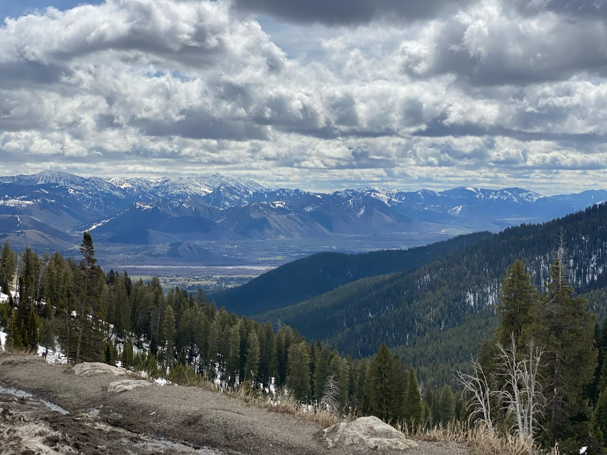

This picture was taken of a hot spring on a chilly day at Yellowstone. The steam would fill the air and create an otherworldly fog. Then the wind would blow revealing these vibrant colors beneath. Only to be followed up by a pause in the wind; bringing more warm fog over the area.
This almost alien landscape is found at the Craters of the moon in Idaho. It was a bit of a hike to get up on this hill. Unreal winds blew almost hard enough to knock you down. I found when I jumped straight up, I would land a few inches away from where I jumped from the wind!